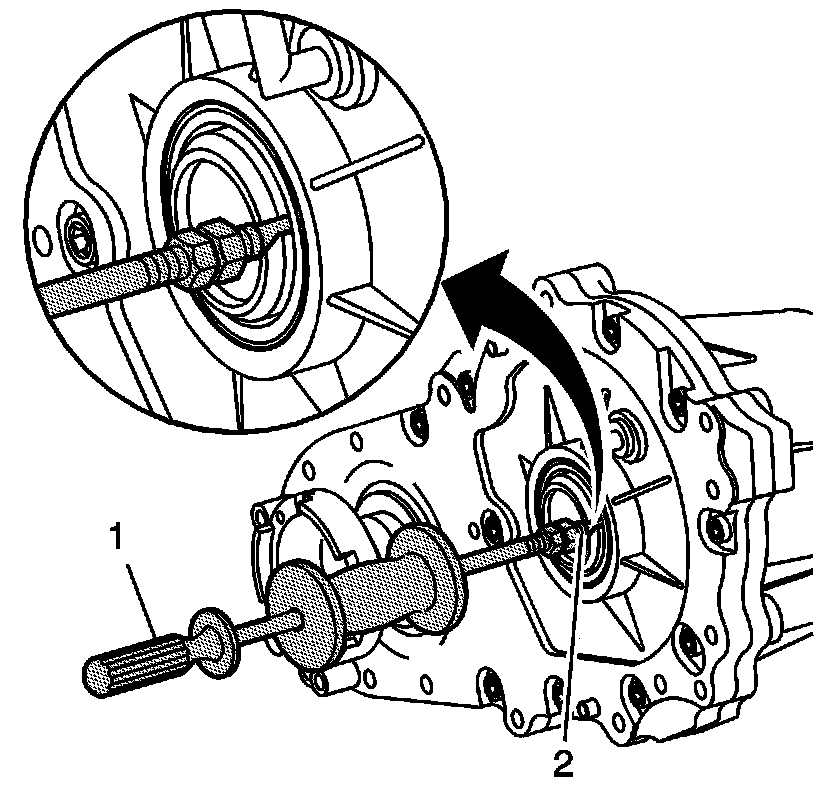
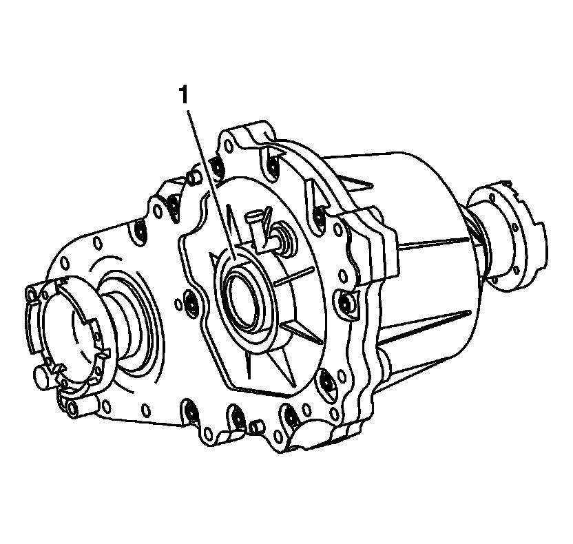
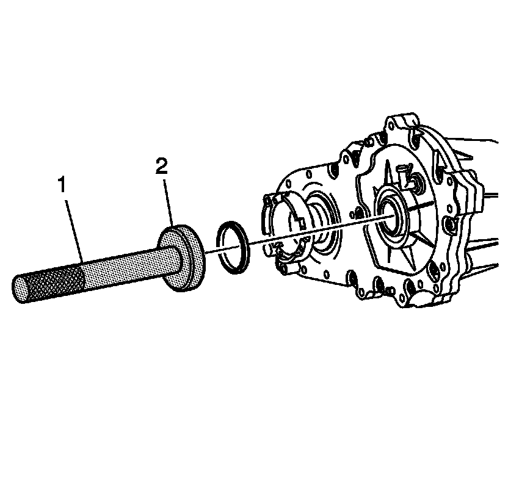

Seals and Gaskets: Service and Repair
Input Shaft Seal Replacement
Tools Required
* J-2619-A Slide Hammer w/Adapter
* J 8092 Driver Handle
* J 45278 Seal Remover
* J 46269 Input Seal Installer

1. Remove the transfer case. Refer to Transfer Case Assembly Replacement (Transfer Case Assembly Replacement) .
2. Using the J 45278 (2) and the J-2619-A (1), slide the hook end of the J 45278 beside the seal lip and shaft. Turn the hook approximately 60 degrees and pull the seal out with the J-2619-A (1).

3. Clean the seal area (1) and input shaft of any old seal material with solvent.

4. Use the J 8092 (1) and the J 46269 (2) to drive in a NEW input seal.
5. Install the transfer case. Refer to Transfer Case Assembly Replacement (Transfer Case Assembly Replacement) .